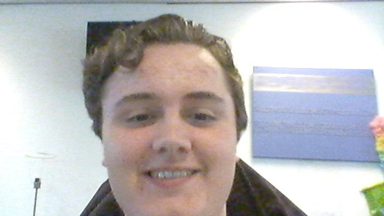

-Basisschool: Ik heb geleerd om met mensen om te gaan en heb basiskennis opgedaan.
De basiskennis kan ik altijd wel goed toepassen, aangezien je dat nodig hebt voor een opleiding.
-VMBO TL: Ik heb vooral technische vakken gehad: NaSK-1 en Wiskunde, maar ook andere vakken zoals: Biologie, Engels, Nederlands en Geschiedenis.
Vooral de technische vakken kan ik goed toe passen in deze opleiding, aangezien ICT een technisch vak is.